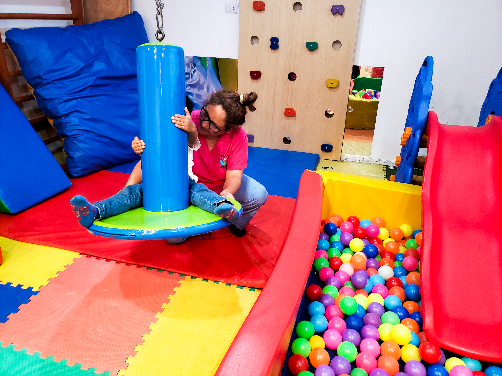
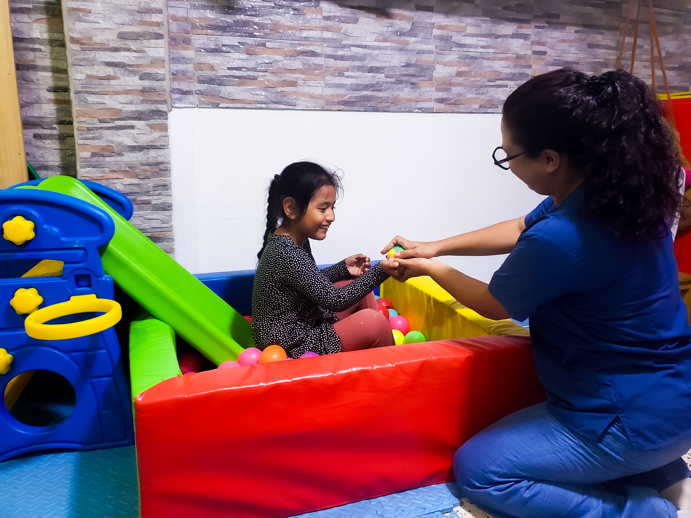
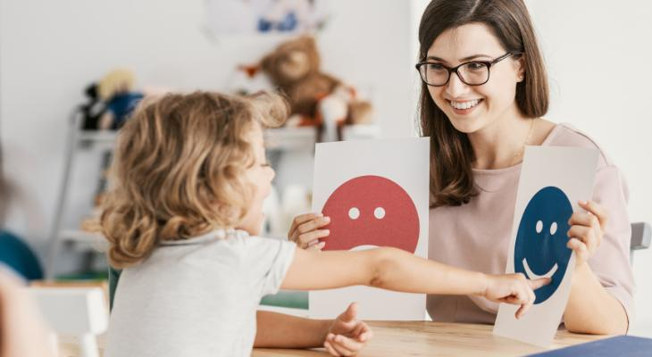
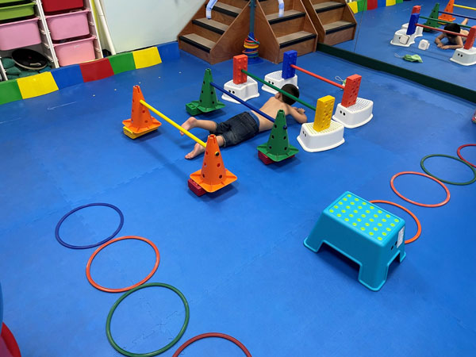
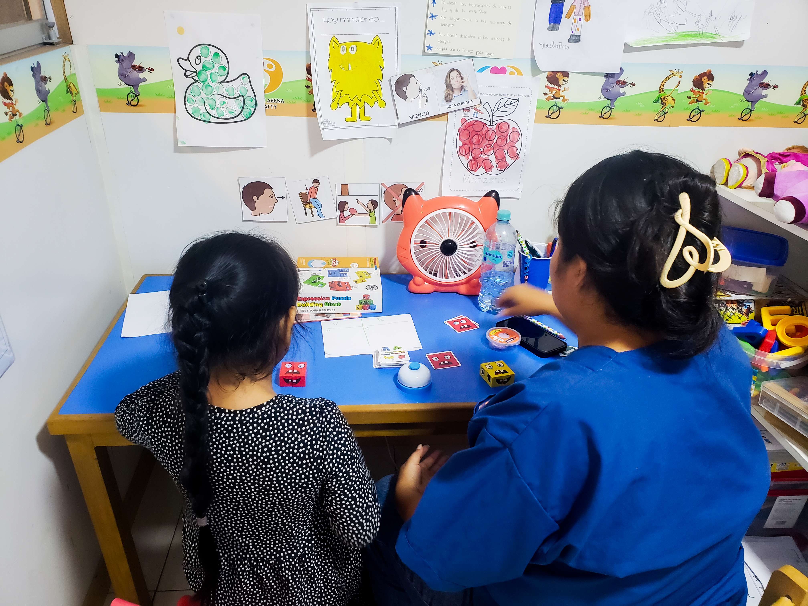
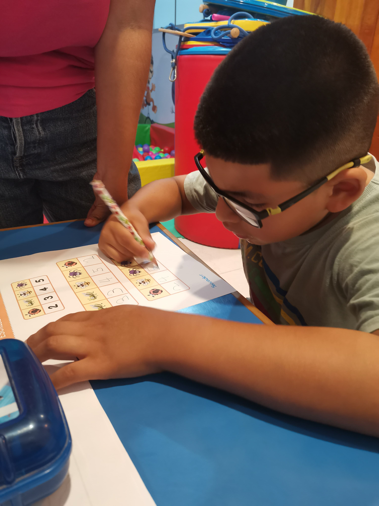

Ofrecemos terapia especializada para mejorar las habilidades de comunicación, tanto verbal como no verbal, en niños y adultos. Trabajamos en la comprensión, expresión, articulación y fluidez del habla, adaptándonos a las necesidades individuales de cada paciente para promover una comunicación efectiva y un desarrollo integral.

Nuestra terapia ocupacional se enfoca en mejorar la integración sensorial y la grafomotricidad, ayudando a niños y adultos a desarrollar habilidades motoras finas, coordinación y control en actividades cotidianas. A través de técnicas personalizadas, buscamos optimizar la percepción sensorial y la escritura, promoviendo una mejor calidad de vida y autonomía.

Se centra en mejorar la movilidad, fuerza y funcionalidad del cuerpo. A través de ejercicios personalizados y técnicas de rehabilitación, ayudamos a tratar lesiones, dolores crónicos y problemas musculoesqueléticos, favoreciendo una recuperación rápida y efectiva para mejorar la calidad de vida y la autonomía de nuestros pacientes.

Intervención especializada para mejorar la comunicación, pronunciación y comprensión verbal en niños con dificultades en el habla, fortaleciendo la expresión oral y fluidez del lenguaje.

Actividades diseñadas para ayudar a los niños a procesar y responder adecuadamente a estímulos sensoriales, mejorando su regulación emocional y motriz en entornos cotidianos.

Ejercicios enfocados en el desarrollo de la coordinación, equilibrio y control corporal en los niños, promoviendo su autonomía y confianza a través del movimiento y el juego.

Intervenciones que apoyan el bienestar emocional de los niños, desarrollando herramientas para gestionar sus emociones y mejorar su autoconocimiento y autoestima.

Actividades específicas para mejorar la capacidad de concentración, atención sostenida y la organización mental en los niños, favoreciendo su rendimiento académico y social.
Evaluación especializada con el Test ADOS – 2 para identificar y diagnosticar posibles signos de autismo en niños, ayudando a definir un tratamiento adecuado y personalizado.
Sesiones de terapia en línea adaptadas a las necesidades de los niños, facilitando el acceso a la intervención profesional desde la comodidad de su hogar.
Ofrecemos capacitaciones virtuales para profesionales y familias, brindando herramientas prácticas para el desarrollo de habilidades en niños con necesidades especiales.
Formaciones presenciales dirigidas a mejorar las competencias en el manejo de terapias y técnicas para el desarrollo de niños con diversas dificultades.
Ofrecemos convenios con instituciones educativas y sociales para implementar programas de intervención y apoyo a niños con diversas necesidades terapéuticas.
PLUS: Certificación del colegio de profesores de Lima metropolitana